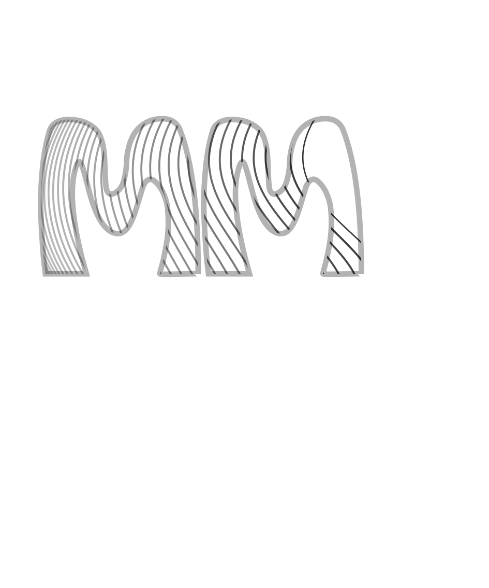
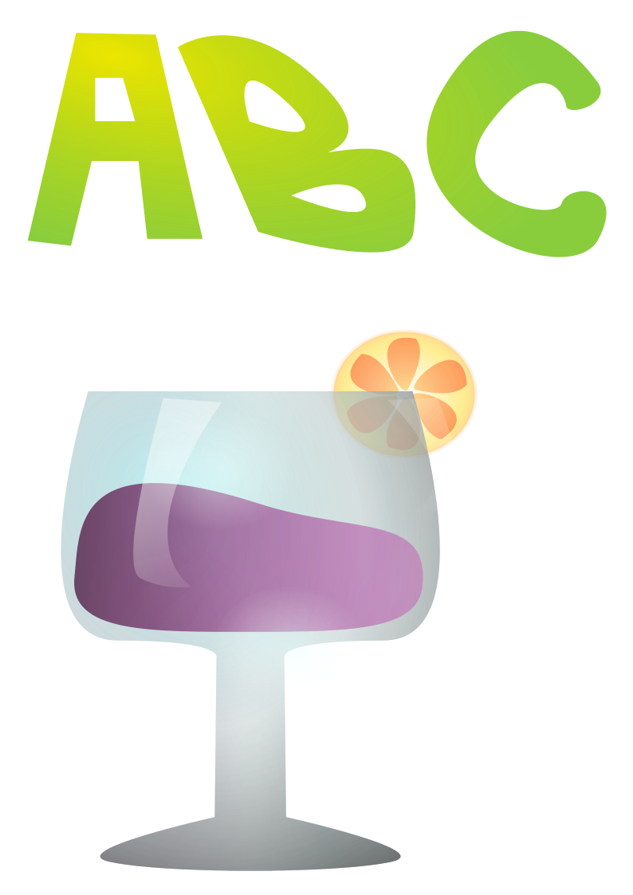
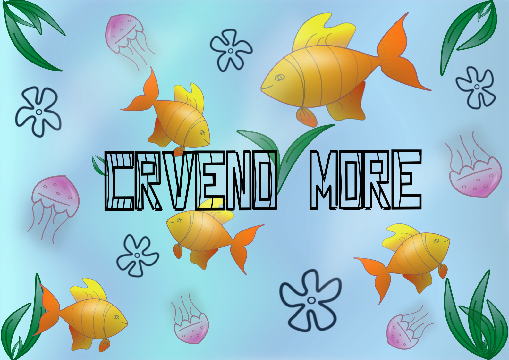
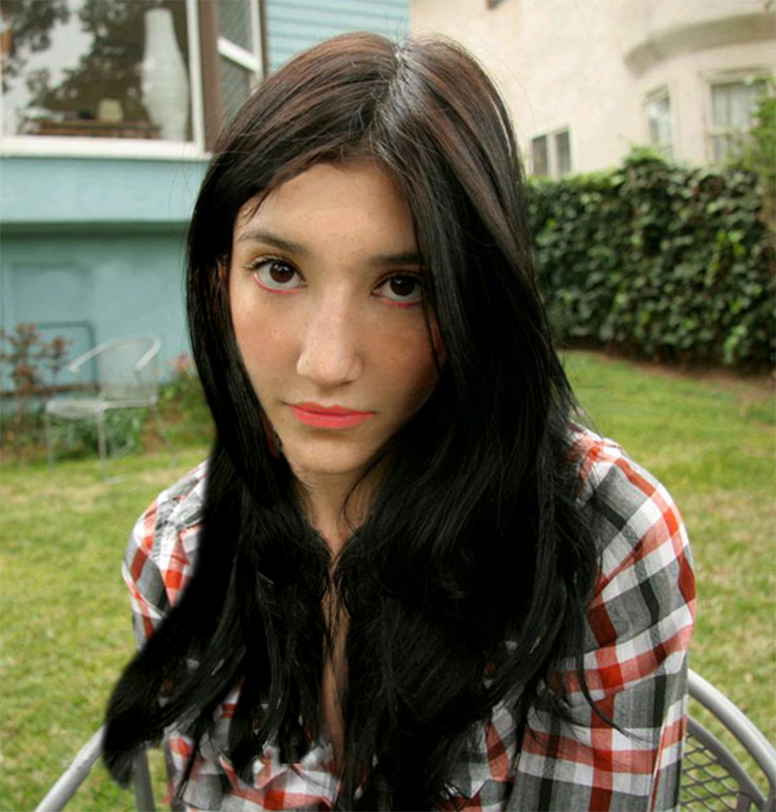
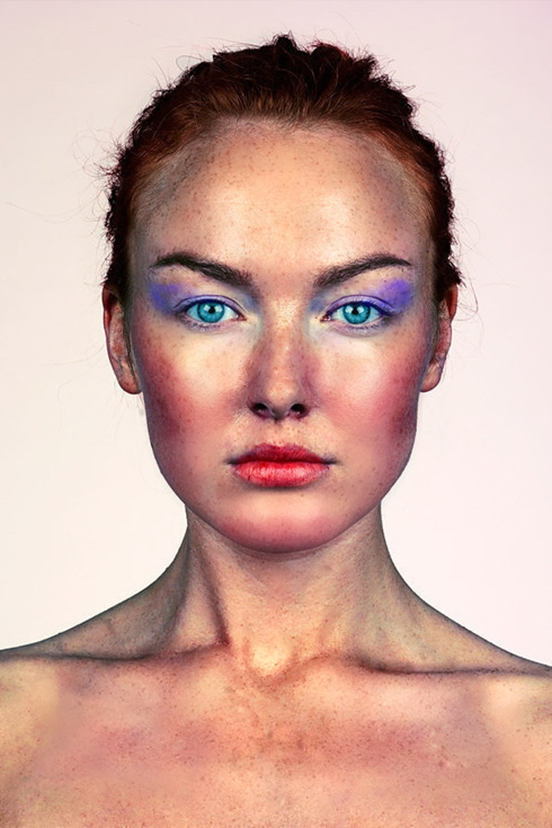
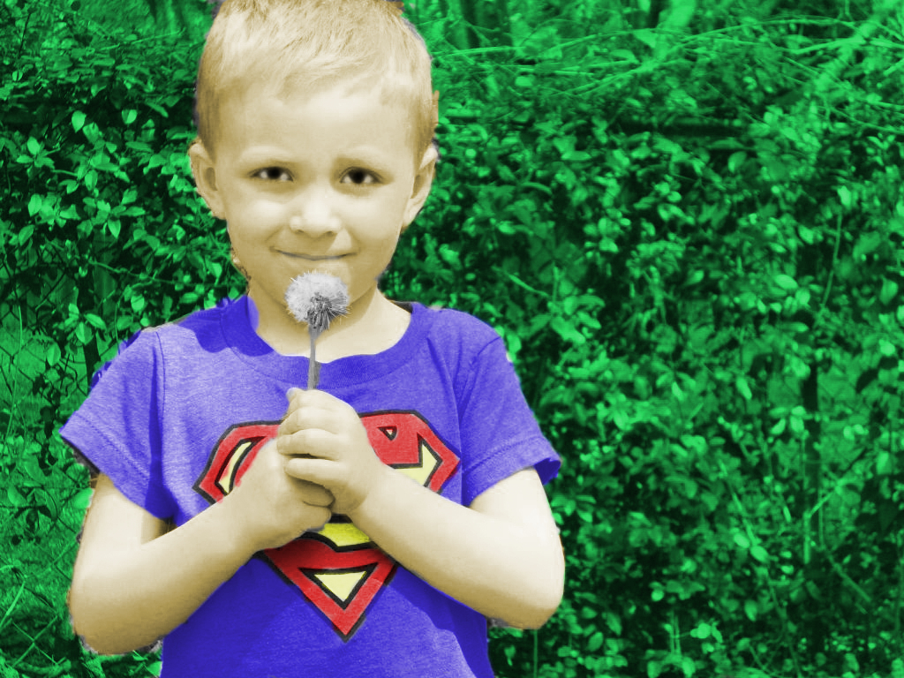
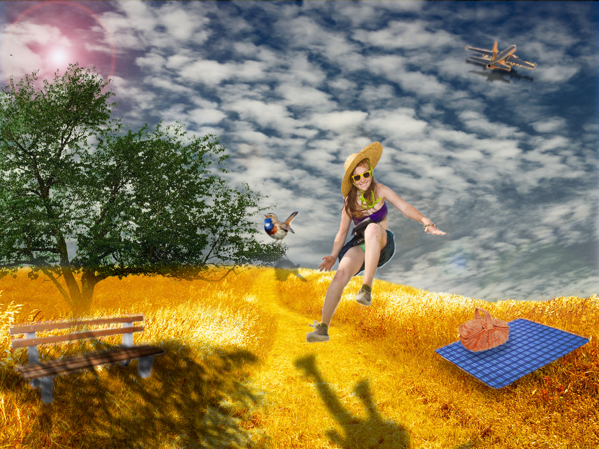

Moja prva vježba je bila u FontForge-u oblikovati vlastiti font.
Kasnije smo se prebacili na Inkscape gdje smo odradili ove vježbe:
U ovoj vježbi koristila sam font koji sam izradila na prvoj vježbi
te smo prema njemu napravili clipping mask.

Nakon upoznavanja s Inkscape-om počeli smo s izradem složenih objekata
koji se sastoje od više staza metodama spajanja ili oduzimanja oblika.
Apliciranje različitih vrsta gradijenata od dvije ili više boja.
Transparencija i poredak slojeva u izradi složene grafike.

Na sljedećoj slici možete vidjeti moj prvi projektni zadatak na ovom kolegiju.
Zadatak je bio iskoristiti sve alate koje smo koristili u FontForge-u i Inkscape-u.
Sve alate smo trebali prikazati kroz temu "morskog podnožja".

Vježbe - GIMP
Nakon FontForge-a i Inkscape-a nastavili smo dalje s rasterskim programom GIMP.
Tamo smo odradili ove vježbe:
Prva vježba u GIMP-u bila je retuširanje, gdje smo na dva primjera morali otkloniti
sve smetnje i oštećenja.


Nakon vježbe retuširanja uslijedila je vježba koloriranje u kojoj smo morali korolirati
primjer koji su nam zadali i svoju sliku.

Treća vježba bila je fotomontaža, gdje smo morali kombinirati više fotografija izrezivanjem
dijelova različitih slika i spajanjem u jednu cjelinu. Isto tako bilo je važno uklopiti sjene
objekata kako bi postigli realističnu sliku.

Na sljedećoj slici nalazi se drugi projektni zadatak na ovom kolegiju.
Zadatak je bio iskoristiti sve alate koje smo koristili u GIMP-u.
Važno je bilo i ubaciti neke svoje slike koje smo sami fotografirali.
Vježbe - video/web
Posljednja cjelina vježbi obuhvaća obradu videa (Shotcut) i izradu web stranica (Notepad++).
Tamo smo obradili:
Prvi zadatak ove cjeline bio je obraditi video. Koristiti: rezanje i spajanje video isječaka iz
više izvora, video efekti, prilagođavanje zvuka te obrada teksta.